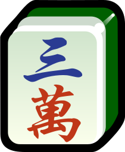

Quick Start
- On the start screen, pick a ruleset — Japanese Riichi or Chinese Classical — and a mode — You vs 3 AI, or local hot-seat (4 humans passing one device).
- On your turn, either click a tile in your hand to discard it, or use a button in the action bar (Riichi, Tsumo, or a Kan option) if it's lit up.
- When someone else discards a tile you can call, a call panel appears — choose Pon / Chi / Kan / Ron, or Pass.
- In hot-seat mode, the app shows a "Pass the device" screen between turns so other players can't see your hand.
Reading the Table
Every seat panel around the table shows the same pieces of information:





- Wind badge — this seat's own seat wind (changes each hand as the deal rotates).
- Dealer marker — shown only on the current dealer (East); the dealer's hand pays/wins double.
- Riichi stick — appears once this seat has declared Riichi (Riichi ruleset only).
- Score — running point total.
- Melds — called/completed sets (chi, pon, kan) laid face-up.
- Discards — every tile this seat has thrown away this hand, in order.
- Hand — this seat's concealed tiles; the most recently drawn tile is outlined.
The table center shows the round (e.g. "East 1"), honba count, tiles left in the wall, and the riichi-stick pot. In Riichi, a dora indicator strip appears once the hand starts.
Universal Basics
Both rulesets share the same skeleton: four seats, a shuffled wall of tiles, and a repeating draw/discard cycle.
- Goal: be the first to complete a hand of 4 sets + 1 pair (14 tiles total counting the winning tile) — or, in either ruleset, the special all-pairs shape Seven Pairs. A "set" is either a run (3 consecutive tiles, same suit), a triplet (3 identical tiles), or a kan (4 identical tiles).
- Turn order is counter-clockwise: East → South → West → North → East…
- Each turn: draw a tile, then discard one (unless you complete your hand and declare a win instead).
- Calls, made on someone else's discard, jump the normal turn order:
- Chi — claim the tile to complete a run; only the player to your left's discard is eligible.
- Pon — claim the tile to complete a triplet; any seat's discard is eligible.
- Kan — claim the tile to complete a set of 4; draws a bonus replacement tile afterward.
- Ron — claim the tile as your winning tile, ending the hand immediately.
- A hand also ends in an exhaustive draw if the wall runs out before anyone wins.
Controls Reference
| Control | When it appears | What it does |
|---|---|---|
| Click a hand tile | Your turn, no riichi lock | Discards that tile. |
| Riichi button | Riichi ruleset, your turn, hand is closed and one discard away from tenpai (waiting), score ≥ 1000 | Declares Riichi: locks your hand (you may only discard the tile you just drew from then on) and puts 1000 points into the table's riichi-stick pot in exchange for extra yaku and revealing ura-dora if you win. |
| Tsumo button | Your just-drawn tile completes your hand | Declares a self-drawn win. |
| Kan options | You hold 4-of-a-kind, or can add a 4th tile to an existing pon | Declares a closed or added kan; you draw a replacement tile and (Riichi) a new dora indicator flips. |
| Pon / Chi / Kan / Ron (call panel) | Someone else just discarded a tile you can legally call | Claims the discard as described above. |
| Pass | Same call panel | Declines the call; play continues normally. |
| Ready | Hot-seat mode, between turns | Confirms the device has been handed to the next player before their hand is shown. |
| Continue | After a win or exhaustive draw | Dismisses the result popup and starts the next hand. |
Japanese Riichi
Hand shape & winning
A winning hand is either 4 sets + 1 pair, Seven Pairs (7 unique pairs, hand must be fully closed), or the rare Kokushi Musou shape (one of each terminal/honor tile, plus a pair among them). On top of having the right shape, you need at least one yaku (scoring pattern) to actually win — a shape with zero yaku cannot be declared.
Riichi, dora, and related mechanics
- Riichi: declare it when your hand is closed, ≥1000 points, and one tile away from complete (tenpai). Costs 1000 points (returned to whoever eventually wins the riichi-stick pot). After declaring, you can only discard the tile you just drew — no more hand rearranging.
- Ippatsu: win within your very next go-around after declaring riichi, with no calls made by anyone in between.
- Dora: bonus-point indicator tiles revealed at hand start (and one more per kan). Each dora tile in your hand adds 1 han. Ura-dora (hidden dora) only counts if you declared riichi and then won.
- Furiten: if any tile that would complete your hand is sitting in your own discard pile, you cannot Ron (you may still Tsumo). This implementation only tracks permanent furiten — see Simplifications below.
- Kan: closed (ankan) from 4 tiles in hand, or added (shouminkan) by adding a 4th tile to your own pon. Either draws a replacement tile from the dead wall and flips a new dora indicator. Once you've declared riichi, you can no longer kan.
Yaku (scoring patterns)
Every winning hand needs at least one of these. Han values shown are closed hand / open hand where they differ.
| Yaku | Han | Requirement |
|---|---|---|
| Riichi | 1 | Declared riichi this hand. |
| Double Riichi | 2 | Riichi declared on your very first discard, before any call at the table. |
| Ippatsu | 1 | Won within one go-around of riichi, no calls in between. |
| Menzen Tsumo | 1 | Self-drawn win with a fully closed hand. |
| Pinfu | 1 | Closed hand, all runs, non-yakuhai pair, two-sided wait. |
| Tanyao (All Simples) | 1 | No terminals (1s/9s) or honor tiles anywhere in the hand. |
| Iipeikou | 1 | Closed hand, two identical runs (e.g. 234m + 234m). |
| Yakuhai | 1 each | A triplet/kan of a dragon, your seat wind, or the round wind (each qualifying group counts separately). |
| Haitei / Houtei | 1 | Tsumo on the very last wall tile / Ron on the very last discard. |
| Rinshan Kaihou | 1 | Tsumo on a kan's replacement tile. |
| Chankan | 1 | Ron by robbing someone else's added kan. |
| Sanshoku Doujun | 2 / 1 | The same run in all three suits (e.g. 456m/456p/456s). |
| Ittsu (Pure Straight) | 2 / 1 | 1-9 of one suit as three runs (123/456/789). |
| Chanta | 2 / 1 | Every set and the pair contain a terminal or honor. |
| Junchan | 3 / 2 | Like Chanta, but terminals only — no honors anywhere. |
| Toitoitsu (All Triplets) | 2 | All four sets are triplets/kans. |
| Sanankou | 2 | Three concealed triplets/kans. |
| Honroutou | 2 | Every tile is a terminal or honor (with triplets, not runs). |
| Shousangen | 2 | Two dragon triplets + the third dragon as the pair. |
| Ryanpeikou | 3 | Closed hand, two separate pairs of identical runs. |
| Honitsu | 3 / 2 | One suit plus honors only. |
| Chinitsu | 6 / 5 | One suit only, no honors at all. |
| Chiitoitsu (Seven Pairs) | 2 | Seven unique pairs; hand must be closed. |
| Dora / Ura-dora | 1 each | Not a yaku by itself — only counts alongside a real yaku. |
Yakuman (limit hands, 13 han): Kokushi Musou, Suuankou (four concealed triplets), Daisangen (all three dragon triplets), Shousuushi / Daisuushi (three or four wind triplets), Tsuuiisou (all honors), Chinroutou (all terminals), Ryuuiisou (all green tiles). See Simplifications for the two classic yakuman this build does not implement.
Fu (bonus points)
Fu adds a second scoring dimension on top of han. Start at 20 and add:
| Triplet, simple tiles | open +2 / closed +4 |
| Triplet, terminal or honor | open +4 / closed +8 |
| Kan, simple tiles | open +8 / closed +16 |
| Kan, terminal or honor | open +16 / closed +32 |
| Pair is a dragon, your seat wind, or the round wind | +2 each (a double-wind pair, e.g. dealer's East-round pair, stacks to +4) |
| Wait was penchan / kanchan / tanki | +2 |
| Won by tsumo | +2 |
| Won by ron with a closed hand | +10 |
Total is rounded up to the nearest 10. Pinfu is a fixed exception: 20 fu on tsumo, 30 fu on ron, ignoring the table above. Chiitoitsu is always exactly 25 fu.
Scoring reference
Base points = fu × 2^(2+han), capped at the Mangan value once it would exceed 2000 — then fixed tiers take over at 5+ han. A few common results (points paid, non-dealer winner):
| Han / Fu | Ron (paid by discarder) | Tsumo (dealer / each non-dealer) |
|---|---|---|
| 1 han, 30 fu | 1000 | 500 / 300 |
| 2 han, 30 fu | 2000 | 1000 / 500 |
| 3 han, 30 fu | 3900 | 2000 / 1000 |
| 4 han, 30 fu | 7700 | 3900 / 2000 |
| Mangan (5 han, or capped) | 8000 | 4000 / 2000 |
| Haneman (6-7 han) | 12000 | 6000 / 3000 |
| Baiman (8-10 han) | 16000 | 8000 / 4000 |
| Sanbaiman (11-12 han) | 24000 | 12000 / 6000 |
| Yakuman (13+ han) | 32000 | 16000 / 8000 |
The dealer pays/receives 1.5× these non-dealer figures (e.g. a dealer Ron win at 3han/30fu is 5800, and on Tsumo every other seat pays 2000 instead of splitting dealer/non-dealer amounts). Add 300 per honba on ron, or 100-per-payer per honba on tsumo, on top of the table above.
Game length
A full game is a hanchan: East round then South round, 4 hands each (8 total, more with repeats/draws), or it ends early if any player's score drops below zero.
Chinese Classical
"Chinese Classical" scoring was never standardized the way modern competitive Riichi is — regional rule sets differ significantly. This build uses one clearly-defined, internally consistent doubling-point variant, documented in full below rather than assumed.
Hand shape & winning
Same target shape as Riichi's basic case: 4 sets + 1 pair, or Seven Pairs. There is no riichi declaration, no dora, and no ura-dora in this ruleset — none of those are classical concepts.
Scoring: doubling points
Score = 8 base points × 2^(doubles), capped at 8 doubles (2048 points), doubled again for the dealer. Each pattern below contributes doubles; a hand can combine several. A few shapes (All Honors, All Terminals, Great Three/Four Dragons or Winds) score at the maximum instantly regardless of anything else.
| Pattern | Doubles |
|---|---|
| Seven Pairs | 2 |
| Concealed Hand (won by discard, fully closed) | 1 |
| Self-Drawn | 1 |
| Closed Wait (tanki / kanchan / penchan) | 1 |
| Dragon Triplet | 1 (per dragon) |
| Seat Wind Triplet | 1 |
| Round Wind Triplet | 1 |
| Small Three Dragons (2 dragon triplets + dragon pair) | 2 |
| Small Four Winds (3 wind triplets + wind pair) | 3 |
| All Triplets (Peng Peng Hu) | 1 |
| All Simples | 1 |
| Half Flush (one suit + honors) | 1 |
| Full Flush (one suit, no honors) | 3 |
| Doubles | Non-dealer score | Dealer score |
|---|---|---|
| 0 | 8 | 16 |
| 1 | 16 | 32 |
| 2 | 32 | 64 |
| 3 | 64 | 128 |
| 4 | 128 | 256 |
| 5+ | doubles again each step, capping at 2048 / 4096 |
Payment convention
This is the biggest practical difference from Riichi:
- Won off a discard: only the discarder pays the full score.
- Won by self-draw: every other player pays the full score (not split three ways).
- Dealer win: whichever of the above applies, the payment amount is doubled.
Game length
Played as a fixed number of hands (round limit set at game start) rather than Riichi's East+South structure.
Glossary
- Tenpai
- One tile away from a complete hand.
- Noten
- Not tenpai — more than one tile away from complete.
- Shanten
- How many tiles away from tenpai a hand is (0 = tenpai already).
- Menzen
- A hand with no open (called) melds — fully concealed except possibly closed kans.
- Ron
- Winning by claiming someone else's discard.
- Tsumo
- Winning by self-draw.
- Chi / Pon / Kan
- Calling a discard to complete a run / triplet / set-of-four.
- Ankan / Minkan / Shouminkan
- A kan formed from your own concealed tiles / claimed from a discard / added onto your own existing pon.
- Honba
- A repeat-hand counter that adds a small bonus to the winner's score each time it's non-zero.
- Furiten
- Being blocked from declaring Ron because a winning tile is already in your own discards.
- Dora
- A bonus tile (Riichi only) that adds han but is not itself a yaku.
- Yaku
- A named scoring pattern; at least one is required to win in Riichi.
- Han / Fu
- The two inputs to the Riichi point formula — yaku count and a separate bonus-point tally.
- Renchan
- The dealer keeping the deal for another hand (win, or tenpai at a draw).
Known Simplifications
This is a from-scratch implementation, not a port of an existing engine. A few real-world rule edge cases were deliberately simplified for scope; none of them affect the core play experience, but competitive players should know about them:
- Furiten is permanent-only — the temporary "missed my own ron this go-around" and "furiten until my next draw after riichi" variants aren't modeled separately.
- No riichi eligibility check on wall size — real rules forbid declaring riichi with fewer than 4 tiles left in the live wall; this build doesn't enforce that cutoff.
- No kan after riichi — the real rule allows it only when it provably doesn't change your wait; rather than implement that check, it's disabled outright once you've declared.
- Chankan (robbing a kan) only applies to added kans, not the rare case of robbing a closed kan for Kokushi Musou.
- Two yakuman aren't implemented: Tenhou/Chiihou/Renhou (winning on the very first uncalled go-around) and Chuurenpoutou (Nine Gates) / Suukantsu (Four Kans) are out of scope for this build.
- Chinese Classical has no minimum-pattern requirement — many real regional rule sets require at least one scoring pattern (or a minimum point value) to declare a win at all ("no chicken hands"); this build lets any complete hand shape win, even for the base 8 points with zero doubles.
- Chinese Classical scoring itself is a custom variant (see the callout in that section above) rather than a transcription of one specific regional rule set, since no single standard exists.
- Exhaustive-draw dealer retention in Classical always keeps the deal with the same dealer, rather than following any particular region's convention.
- No manual in-browser playtest was performed while building this — correctness was verified with an automated test suite (100,000+ assertions) instead, including a scripted simulation of real UI clicks. See the project README for full test details.